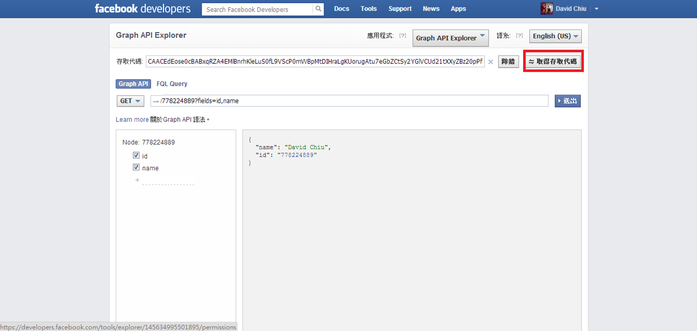
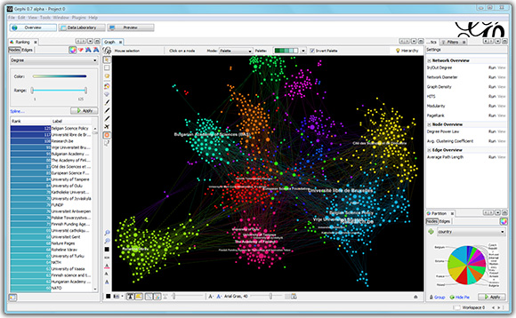

Agenda
- What is Social Network?
- Why Analyze Social Network?
- How to Analyze
- Social Network Connection (Oauth, Oauth2)
- Social Network Analysis (Network Graph)
- Social Network Graph
- Conclusion
Social Network
http://libeltyseo.com/wp-content/uploads/2013/03/social-networking.png
Human Nature
http://cdn.macado.com/assets/2010/03/peeping-tom.gif
What do we want to know?
- Who knows whom, and which people are common to their social networks?
- How frequently are particular people communicating with one another?
- Which social network connections generate the most value for a particular niche?
- How does geography affect your social connections in an online world?
- Who are the most influential/popular people in a social network?
- What are people chatting about (and is it valuable)?
- What are people interested in based upon the human language that they use in a digital world?
Lesson 1: Connect to Social Network
- OAuth Flow
- Oauth v.s. OAuth2
- OpenID
Difference Between OAuth and OAuth2
- More OAuth Flows to allow better support for non-browser based applications
- OAuth 2.0 no longer requires client applications to have cryptography
- OAuth 2.0 signatures are much less complicated
- OAuth 2.0 Access tokens are "short-lived"
- OAuth 2.0 is meant to have a clean separation of roles between the server responsible for handling OAuth requests and the server handling user authorization
Connect to Facebook
https://developers.facebook.com/
Get Access Token

https://developers.facebook.com/tools/explorer/
Permission List
- User Data Permissions:
- user_hometown
- user_location
- user_interests
- user_likes
- user_relationships
- Friends Data Permissions:
- friends_hometown
- friends_location
- friends_interests
- friends_likes
- friends_relationships
- Extended Permissions:
Required Packages
- RCurl
- General network (HTTP/FTP/...) client interface for R
- rjson
- XML
- Tools for parsing and generating XML within R and S-Plus
- igraph
- Network analysis and visualization
- bitops
Gephi
Gephi, an open source graph visualization and manipulation software

Learn More About Gephi
https://www.udemy.com/gephi/
Your Turn
- Popular Checkins
- Common Interest
- Female/Male Distribution
- Photos Being Liked
- Asociation Rule of Friends